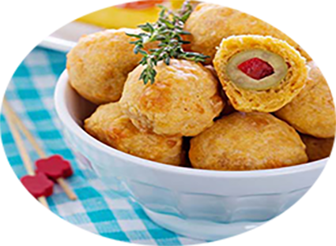

Bouchées d'olives croustillantes au fromage

Pour 6 personnes
Préparation : 25 mn
Cuisson 25 mn
Ingrédients
- 150 g de farine
- 80 g de parmesan râpé
- 2 c. à café d’origan séché
- 50 petites olives farcies
- 100 g de beurre
- 2 c. à soupe d’eau
Recette
- Mélangez la farine, le beurre, le parmesan, l’origan et l’eau dans un saladier jusqu'à obtenir une boule de pâte bien homogène.
- Couvrez la pâte de film alimentaire et placez-la au frais pendant 30 minutes.
- Égouttez les olives.
- Abaissez la pâte entre deux feuilles de papier sulfurisé.
- Découpez des disques de pâte de 4 cm de diamètre, à l'aide d'un emporte-pièce.
- Disposez une olive au centre de chaque disque.
- Rabattez la pâte sur les olives en pressant bien.
- Déposez les bouchées aux olives sur une plaque de cuisson recouverte de papier sulfurisé.
- Placez au frais pendant 30 minutes.
- Préchauffez le four à 180°C, puis Enfournez pendant 20 minutes.
- Laissez tièdir avant de déguster.
|